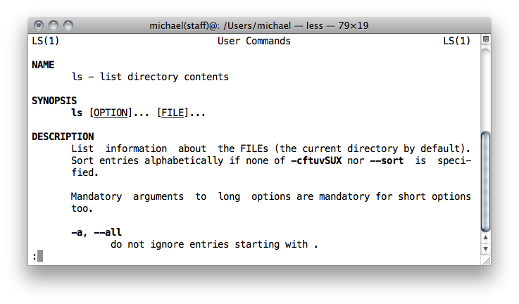
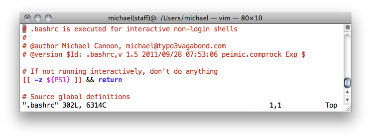
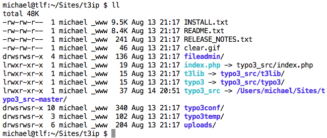

Michael Cannon
TYPO3 Vagabond
US, South Korea, Taiwan, India, Germany
It might be old school, but it's not outdated!
michael@tlf:~ $
Command Line Interface (CLI)
bash environment at https://github.com/typo3-vagabond/skel.git
bash (Bourne Again SHell), csh (C-SHell)ksh (Korn SHell), sh, tcsh (Tenex C-SHell), zshbash
zsh
bash compatiblemichael@tlf:~ $ pwd /Users/michael michael@tlf:~ $ ls Desktop/ Library/ Sites/ michael@tlf:~ $ ls -l total 4.0K drwx------+ 6 michael staff 204 Aug 13 10:19 Desktop/ drwx------+ 38 michael staff 1.3K Mar 29 18:31 Library/ drwsrws--x+ 33 michael _www 1.1K Aug 12 11:39 Sites/
pwd – print working directoryls – list directory contentsmichael@tlf:~/tmp $ cat hello.txt Hello Phnom Penh michael@tlf:~/tmp $ less lipsum.txt
cat – displays the contents of a text fileless – like cat, but with pagination
michael@tlf:~ $ pwd /Users/michael michael@tlf:~ $ cd ../; pwd /Users michael@tlf:~ $ cd /Users/michael/Sites/; pwd /Users/michael/Sites michael@tlf:~/Sites $ cd; pwd /Users/michael
cd [directory] – change directory
cd .. – change directory upmichael@tlf:~/hmm $ ls date.txt michael@tlf:~/hmm $ cp date.txt today.txt; ls date.txt today.txt michael@tlf:~/hmm $ mv today.txt tomorrow.txt; ls date.txt tomorrow.txt michael@tlf:~/hmm $ rm tomorrow.txt; ls date.txt
cp file file2 – copy file to file2mv file file2 – rename file to file2rm file – remove filemichael@tlf:~/hmm $ mkdir dir1; ls dir1/ michael@tlf:~/hmm $ rmdir dir1; ls michael@tlf:~/hmm $ rm -r dir1; ls michael@tlf:~/hmm $ cp -r dir1/ dir2; ls dir1/ dir2/ michael@tlf:~/hmm $ rmdir dir2; ls dir1/ michael@tlf:~/hmm $ mv dir1/ dir2; ls dir2/
mkdir dir1 – create directory dir1rmdir dir1 – remove empty directory dir1rm -r dir1 – remove non-empty directory dir1cp -r dir1 dir2 – recursively copy directory dir1 to dir2mv dir1 dir2 – rename directory dir1 to dir2michael@tlf:~ $ cat /etc/c[tab] com.apple.named.conf.proxy csh.login com.apple.screensharing.agent.launchd csh.logout csh.cshrc cups/ michael@tlf:~ $ cat /etc/cs[tab] csh.cshrc csh.login csh.logout michael@tlf:~ $ cat /etc/csh.l[tab] csh.login csh.logout michael@tlf:~ $ cat /etc/csh.logout
michael@tlf:~ $ man ls

michael@tlf:~ $ gzip --help Usage: gzip [OPTION]... [FILE]... Compress or uncompress FILEs (by default, compress FILES in-place). -c, --stdout write on standard output, keep original files unchanged -d, --decompress decompress … michael@tlf:~ $ man gzip michael@tlf:~ $ apropos gzip to-gzip(1) - converts .Z and .lzo files to gzip format gzip(1), gunzip(1), zcat(1) - compress or expand files zforce(1) - force a '.gz' extension on all gzip files
command --help or command -h – short built-in help for commandman command – display the on-line manual pages for command
less navigation – space, b, /, qapropos string – search the whatis database for stringmichael@tlf:~ $ alias la="ls -a" michael@tlf:~ $ la .CFUserTextEncoding .crash_report_preview .macports Library .DS_Store .crash_reportrc .matplotlib Movies michael@tlf:~ $ alias ll="ls -lh" michael@tlf:~ $ ll total 4.0K drwx------+ 8 michael staff 272 Aug 13 13:59 Desktop/ drwsrws--x+ 33 michael _www 1.1K Aug 12 11:39 Sites/ michael@tlf:~ $ alias hisg='history | \grep' michael@tlf:~ $ hisg cp 2 2012-06-21 17:39:02 vi gitadd gitcp gitrm 43 2012-06-21 17:58:28 cp cvs2cl.pl cvs2cl.pl.o michael@tlf:~ $ alias ..="cd .."
alias shortcut="command" – Create command shortcuts~/.alias filenano & pico
nano & pico – easy to use, inflexible
vi & vim

vi & vim – steep learning curve, flexible, powerful
# Move all "linux" named HTML files into directory dir1
michael@tlf:~ $ mv *linux*.html dir1
# List files and directories beginning with mk or git
michael@tlf:~ $ ls {mk,git}*
# List files and directories not starting with letters a to r
michael@tlf:~/bin $ ls [!a-r]*
| Wildcard | Matches |
|---|---|
| * | zero or more characters |
| ? | exactly one character |
| [abcde] | exactly one character listed |
| [a-e] | exactly one character in the given range |
| [!abcde] | any character that is not listed |
| [!a-e] | any character that is not in the given range |
| {debian,linux} | exactly one entire word in the options given |

cd /Users/michael/Sites/aihrus/
# Recursively change owner to michael and group to www
chown -R michael:www *
# Recursively changing file permissions to remove all access, then grant
# read/write to files & directories, and execute to directories
chmod -R a=,a-s,u+rwX,g+rwX *
# Correct .htaccess permissions to be readable
chmod a=,a-s,u+rw,g+rw .htaccess
# Enable cron file execution
find . -type f \( -name "*.sh" -o -name "*.phpsh" \) -exec chmod ug+x {} \;
# Enabling SETUID and SETGID on directories - clean ownership
find * -type d ! -type l -exec chmod ug+s {} \;
chmod ug+s /Users/michael/Sites/aihrus/
# Enabling exec on /Users/michael/Sites/aihrus/
chmod a+X /Users/michael/Sites/aihrus/
FLOW3 starts and ends on the command line, the IDE is for in between
Ask, speak up, mumble aloud
Michael Cannon
TYPO3 Vagabond
michael.cannon@in2code.de